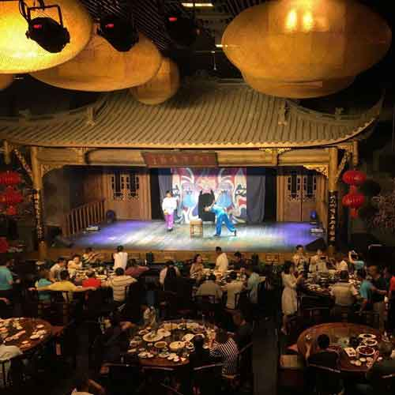

川剧喷火变脸
变脸是运用在剧情中塑造人物的川剧艺术的一种特技。变脸的手法大体上分为三种:抹脸、吹脸和扯脸，此外，还有一种“运气”变脸。
抹脸是将化妆油彩涂在脸的某一特定部位上，到时用手往脸上一抹，便可变成另外一种脸色。如果要全部变，则油彩涂于额上或眉毛上，如果只变下半部脸，则油彩可涂在脸或鼻子上。如果只需变局部，则油彩只涂要变的位置即可。
吹脸只适合于粉末状的化妆品，如金粉、墨粉、银粉等等。有的是在舞台的地面上摆一个很小的盒子，内装粉末，演员到时做一个伏地的舞蹈动作，乘机将脸贴近盒子一吹，粉末扑在脸上，立即变成另一种颜色的脸。
扯脸是比较复杂的一种变脸方法。它是事前将脸谱画在一张一张的绸子上，剪好，每张脸谱上都系一把丝线，再一张一张地贴在脸上。丝线则系在衣服的某一个顺手而又不引人注目的地方，随着表演的需要，在舞蹈动作的掩护下，再一张一张地扯下来。
故事相关产品
-

-
老茶馆
-

-
往返交通
相关故事
-

-
成都锦里
都市里离浪漫最近的地方——锦里,体验时尚休闲魅力街区。
-
-
- 
-
顺兴老茶馆
吃川菜,品小吃,看川剧表演,来顺兴老茶馆可以一次搞定。
-
评论
2017.8.31 20:06
川剧高腔曲牌丰富，唱腔美妙动人，最具地方特色,语言生动活泼，幽默风趣，充满鲜明地方色彩浓郁的生活气息